<div class="row">
  <div class="col-md-8 col-md-offset-2">
    <h2>Running Linux on White Box Switches</h2>

<p>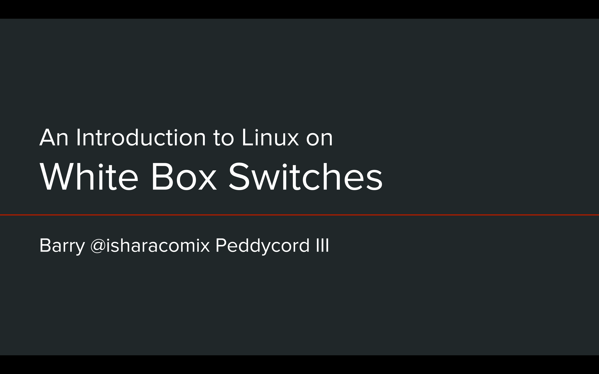</p>
<p>This is the extended version of my presentation for the
    <a href="http://trilug.org/2016-08-11/installing-linux-on-switches">Triangle Linux Users Group</a>.
    In this presentation, I introduce <a href="http://onie.org">ONIE</a> and
    <a href="http://cumulusnetworks.com">Cumulus Linux</a>. The
    <a href="http://github.com/cumulusnetworks/onie-vagrant">source code</a>
    for all of my demos is on Github, so you can download and run through my
    examples yourself!
</p>

<p>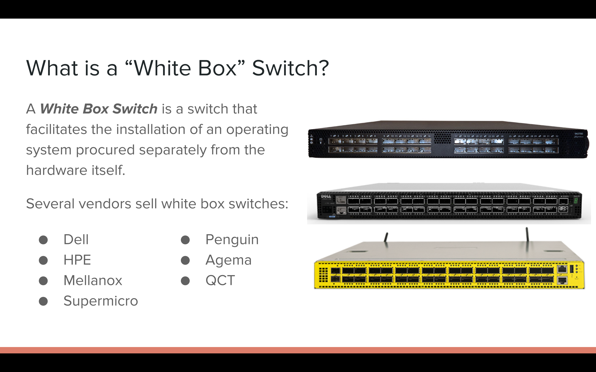</p>
<p>I define White Box switches as being "switches that facilitate the installation
   of an operating system procured separately from the hardware itself". This
   definition doesn't sound particularly impressive to people who come from the
   Linux world because they take for granted the ability to buy a PC or a server
   and put Ubuntu or Red Hat on it. However, being able to install an OS on a
   managed switch in a data center is a relatively new development that
   fundamentally alters the way that these devices are sold, marketed, and
   procured.</p>
<p>Traditionally, switches are sold as black boxes. When someone refers to a switch
   as a "Cisco Switch", they are usually referring to the hardware and the software as
   an inseperable bundle. While it may be possible to flash the firmware and
   install an operating system on such a device, the key feature of these White
   Box switches is that this process of installation and re-installation is
   painless and standardized much like network installation via protocols like
   PXE.</p>
<p>It's worth mentioning that these devices called switches are more appropriately
   called "multilayer switches" in that they can do the work commonly associated
   with routers.</p>


<p>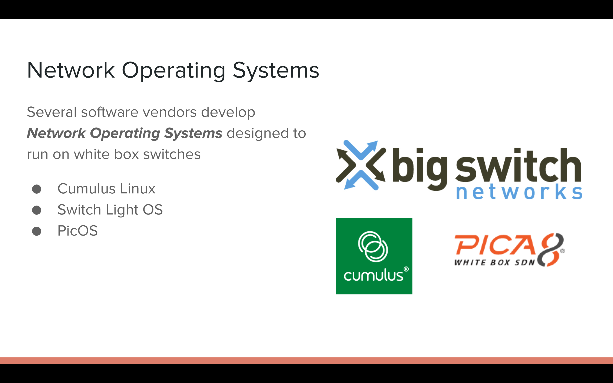</p>
<p>Network Operating Systems (NOS) for white box switches come in many different
   flavors, some of which are vastly different from the experience one would
   have on a Cisco or Arista box.</p>
<p>Cumulus Linux, for example, seeks to create a pure Linux experience
   on the switch. Rather than having to use a modal CLI to inject commands
   directly into the hardware accelerated ASIC, Cumulus Linux transparently
   translates the Linux kernel networking state such as devices, IP addresses,
   and forwarding tables to the ASIC in the background. This means that if you
   are already using Linux on your servers, there is a single interface across
   all devices on network.</p>
<p>Big Switch's Switch Light OS is an application that runs on White Box
   switches and exposes an API to their controller service, Big Fabric.
   Big Fabric allows you to configure your network from a bird's-eye perspective,
   and the switches are automatically configured to reflect the configuration in
   the controller.</p>
<p>Many of these NOS are pitched as Software-Defined Networking (SDN) solutions.
   The most well-known SDN protocol is known as
   <a href="https://en.wikipedia.org/wiki/OpenFlow">OpenFlow</a>, where the
   control plane is offloaded to another device and tells the devices where to
   route traffic. These NOS enable SDN in a more general sense, by abstracting
   the low-level networking functionality behind remotely programmable APIs
   such as Big Fabric in the case of Switch Light, or Ansible/Puppet/Chef in the case
   of Cumulus Linux</p>

<p>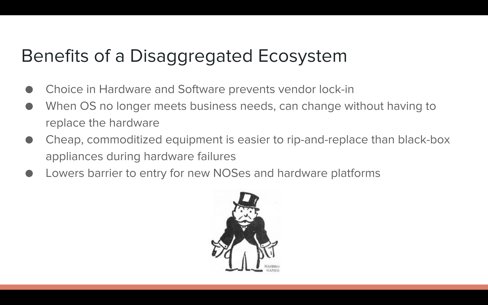</p>
<p>From a sales and procurement perspective, disaggregation of the hardware and
   software puts a lot of power in the hands of the customer. First of all, it
   allows a customer to force vendors to bid against each other. If a customer
   has a particular NOS they like, then they can make hardware vendors compete
   for support of that OS. If the software they are using no longer meets their
   requirements, they can try out new operating systems without having to
   throw away all of the physical equipment they already have.</p>
<p>Disaggregation is good for vendors too! Having a common base of popular
   hardware to build on lowers the barriers for a new NOS to enter the market,
   while at the same time having a set of popular network operating systems
   makes it easier for new hardware developers to get in on the action.
   Different vendors can compete on different dimensions, whether that's price,
   power efficiency, support, or features.</p>
<p>White box switches are often sold directly by the manufacturers, meaning that
   they come much cheaper than their branded counterparts. This means that it's
   much easier to keep hot spares, build separate testing infrastructures, and
   create more redundant networks when the budget may not allow for it otherwise.
   Much like servers these days, this turns switches from expensive appliances into
   commodities.</p>
<p>In fact, this new ecosystem is good for just about everyone except for
   established monopolies. :)</p>


<p>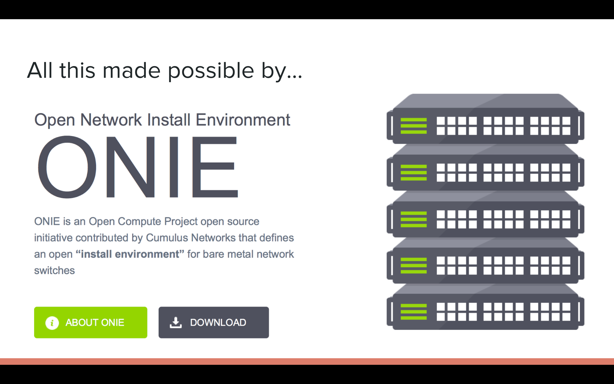</p>
<p>The <a href="http://onie.org">Open Network Install Environment</a> is the
   killer app of the white box switch. ONIE was originally developed by
   Cumulus Networks and was submitted to the
   <a href="http://opencompute.org">Open Compute Project</a> to be used as the
   de facto standard for open whitebox switches. ONIE is a minimalistic Busybox
   OS that comes factory-installed on OCP switches to facilitate the installation
   of NOS. ONIE is like a PXE, but with a lot more features and (in my opinion)
   much easier to configure and use.</p>


<p>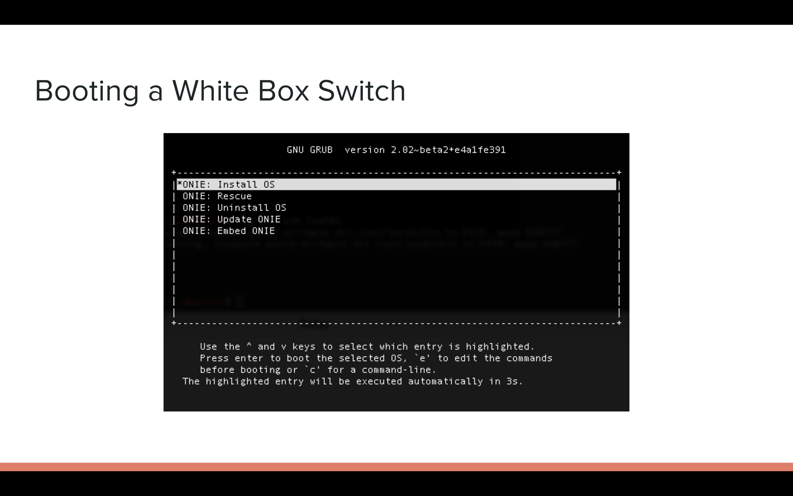</p>
<p>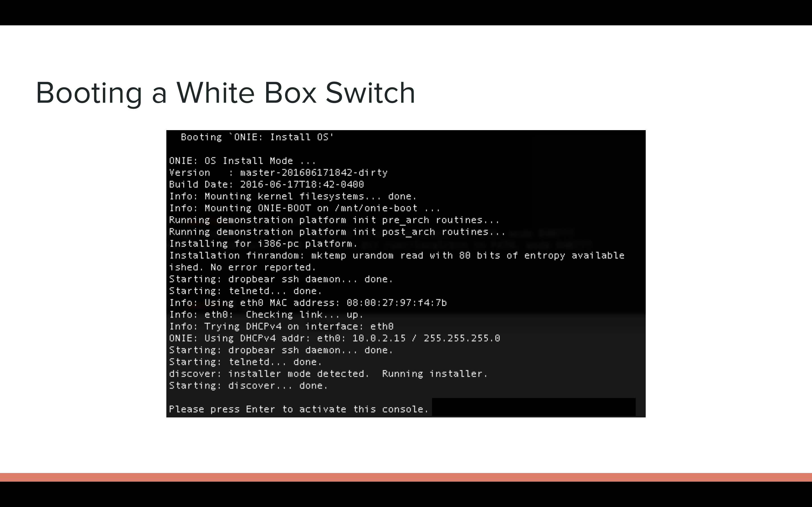</p>
<p>When you boot a white box switch fresh from the factory, you'll see something
   that looks pretty familiar. The grub bootloader is installed by default, and
   ONIE is the top OS. When ONIE installs a new NOS, it will update the grub
   bootloader to use it by default, and if you need to reinstall for any reason,
   you can just select ONIE Install Mode to do the whole process over again.</p>


<p>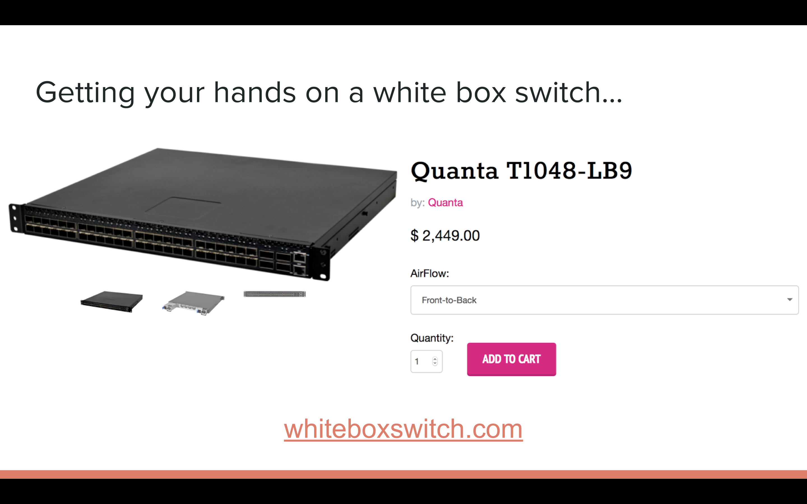</p>
<p>At this point, you're probably wondering how you can play with a switch like
   this. Like most enterprise gear, it's very difficult to order it without
   talking to a salesperson. <a href="http://whiteboxswitch.com">Whiteboxswitch.com</a>
   is a reseller that seeks to make purchasing white box switches and NOS
   transactional, but with a list price of close to $2500 for a low-end switch,
   this cost is prohibitive for most home users.</a>


<p>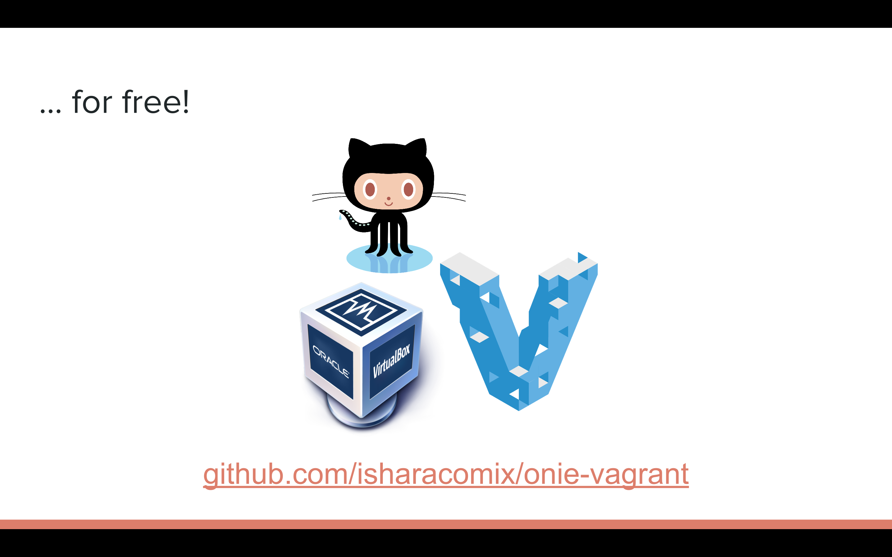</p>
<p>I took the ONIE ISO from the OCP's Github page and developed a modified version
   of it into a base box for <a href="http://vagrantup.com">Vagrant</a>. Vagrant
   is an orchestration tool for VM deployment, which allows you to stitch together
   VM networks easily and repeatably. With this installation of just two programs,
   Vagrant and Virtualbox, you can run <a href="http://github.com/isharacomix/onie-vagrant">any of my examples</a>
   and see what it's like to log into a brand new white box switch.</p>

<p>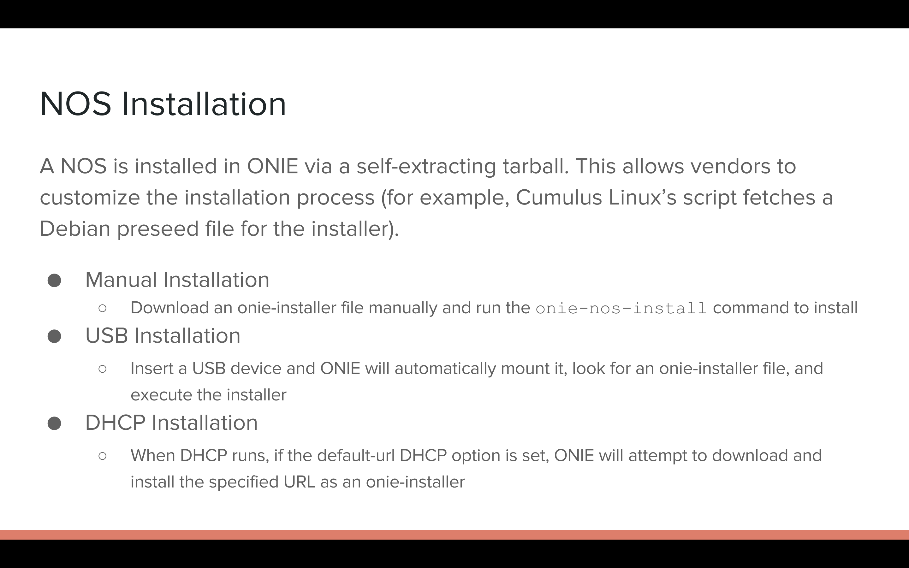</p>
<p>In this presentation, I demonstrate two of the three ways to install a NOS in ONIE.</p>
<p>The first way is manual installation. This is most useful when learning how
   ONIE works or troubleshooting a device, since it isn't scalable to do it
   in production. In ONIE, simply run the command <code>onie-nos-install</code>
   on an ONIE install image and watch as the installation takes place. The
   following video will show you that process in action. If you would like to
   follow along, you can find the steps in the
   <a href="http://github.com/isharacomix/onie-vagrant/examples/onie-nos-install">onie-vagrant Github repository.</a></p>

<p><iframe width="100%" height="400" src="https://www.youtube.com/embed/IbhwlWKz8OY" frameborder="0" allowfullscreen></iframe></p>

<p>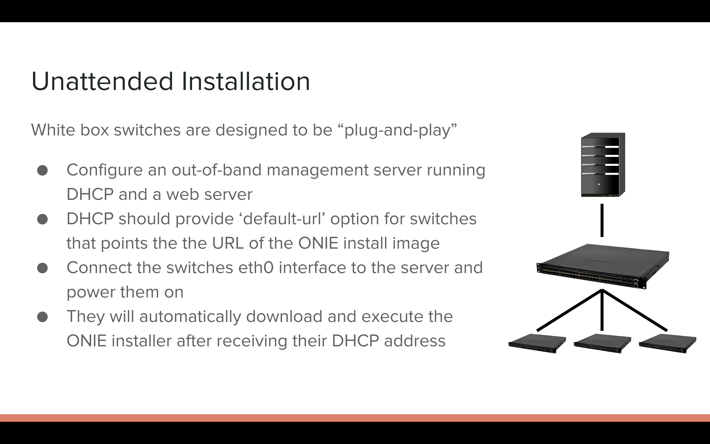</p>
<p>The second, and much more scalable approach to installation is the DHCP
   installation approach. This is part of a larger workflow called <em>unattended
   installation</em>, where you can simply plug a white box switch into your
   network, and it is automatically provisioned and configured by your automation
   infrastructure. All you need is a management server that runs DHCP and a
   web server such as Apache or Nginx, and set up DHCP to send the <code>default-url</code>
   option. When ONIE is in installation mode, it attempts to do DHCP over and
   over again until it finds that option, upon which it will then attempt to
   download and run whatever it finds there. I like to set up explicit DHCP
   hosts entries for each switch's mac address so that I can control their
   hostnames as well.</p>
<p>The nice thing about setting up this infrastructure is that it is super
   easy to do factory resets. Simply log into a switch, reboot, and pick
   ONIE install mode from the menu, and everything will be reinstalled
   for you. Another video of this demo is shown below, and you can follow along
   with the steps in <a href="http://github.com/isharacomix/onie-vagrant/examples/dhcp-install">the Github repo</a>.</p>

<p><iframe width="100%" height="400" src="https://www.youtube.com/embed/NjPbza8Wmag" frameborder="0" allowfullscreen></iframe></p>
<p>If you're paying attention, you'll probably notice the existence of a preseed
   file. Because Cumulus Linux is based on Debian, the Debian installer is capable
   of finding and running this preseed file to do configuration at install-time.
   I use the preseed file to create a Vagrant user and to configure the names of
   the front panel ports so that instead of being named eth15 and eth16, they are
   named swp31 and swp32. Preseed files are very helpful in the virtual case,
   but I would never recommend them in production since they are very picky and
   hard to debug.</p>
<p>Cumulus Linux has a feature called "Zero Touch Provisioning", which allows
   it to run a script the first time it boots, also retrieved by a DHCP option
   (in this case, vendor-specified option 239). ZTP is configured in this
   demo as well so you can see how it works. ZTP scripts are a more appropriate
   platform for doing configuration and other actions as well, such as user
   creation and license management.</p>


<p>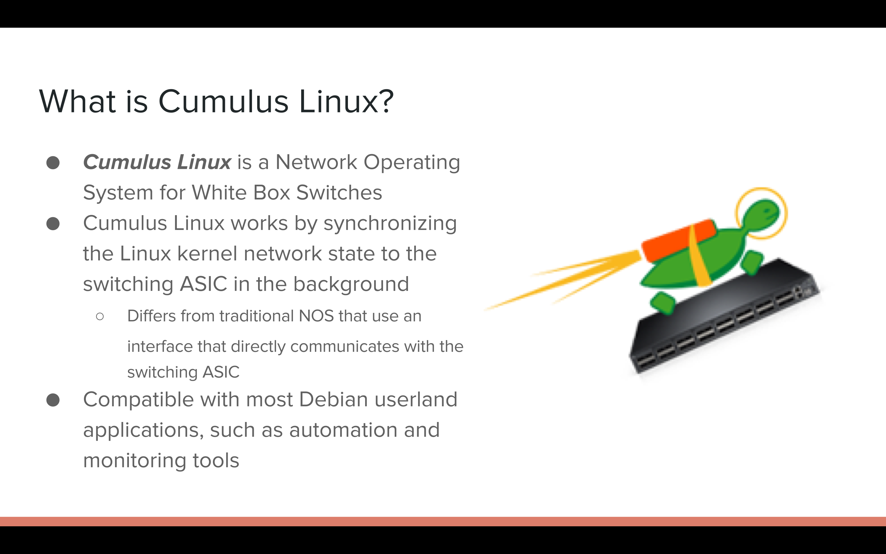</p>
<p>Cumulus Linux is a full-featured Network Operating system that seeks to
   create an authentic Linux experience on a switch. Linux is already a very
   popular environment in the data center as it is the language of choice for
   most servers, so by porting Linux to switches as well, we are able to
   create a unified environment for the entire datacenter.</p>
<p>This works via a proprietary daemon called switchd that runs in the background
   and monitors changes in the Linux kernel's network state and writes those
   changes to the ASIC for hardware acceleration.</p>
<p>Cumulus Linux is built on Debian, and is compatible with most userland
   Linux tools for automation, monitoring, and troubleshooting. In addition to
   being able to leverage an ecosystem of free and commercial software,
   administrators are able to bring their
   expertise and workflow from servers to the networking equipment as well.</p>
<p>Further, many of the changes in Cumulus Linux that have been implemented to
   improve the experience of configuring networks in Linux have been ported back
   to the upstream community for inclusion. This includes ifupdown2, as well as
   kernel upgrades for Virtual Route Forwarding (VRF).</p>


<p>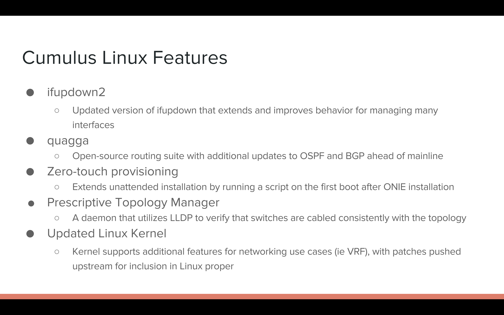</p>
<p>Doing networking on Linux is not easy, and its amazing how spoiled I've become
   using the features made available through Cumulus Linux. ifupdown, for example,
   is notoriously difficult to use if you are doing anything more complicated than
   bringing up an interface. Aliases, post-up configuration, and exotic interfaces
   like bonds and bridges are all quite painful to use. ifupdown2 streamlines
   the configuration of the network, and also adds a smart reload that makes it
   possible to read the entire file but only touching the interfaces that have
   actually been altered, which is very important to avoid breaking traffic flows
   on production devices.</p>
<p>The real bread and butter of our work is in the
   <a href="http://www.nongnu.org/quagga/">Quagga</a> suite of open source
   implementations of routing protocols.</p> We have developed and upstreamed
   multiple improvements to BGP and OSPF including performance improvements
   based on production use cases, and usability improvements by adopting common
   default values to reduce the amount of boilerplate configuration necessary
   for cookie-cutter configs.</a>


<p>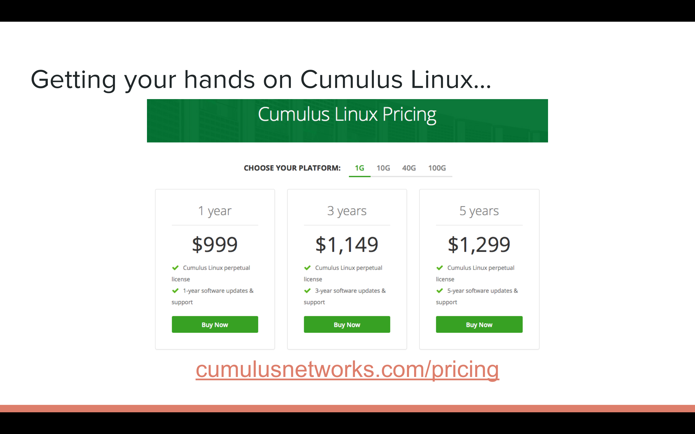</p>
<p>Cumulus Linux is an enterprise product, so we license it to cover the cost
   of 24x7 support. However, if you want to play with it on your own, you are
   not out of luck!</p>


<p>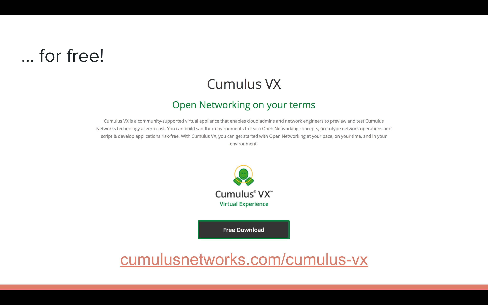</p>
<p><a href="https://cumulusnetworks.com/cumulus-vx/">Cumulus VX</a> is our
   freely-available Virtual version of Cumulus Linux. Since
   VMs don't have switching ASICs, we can just take a Debian VM, replace the
   repos, and install our own open source software to faithfully simulate the
   Cumulus Linux environment. Cumulus VX also has an ONIE install image that is
   compatible with the Vagrant box I introduced earlier in the presentation,
   meaning it's possible to replicate the entire bootstrapping environment as
   well.</p>
<p>Cumulus VX isn't just a stripped down version of Cumulus for tire-kicking.
   We have customers who actually use VX to create virtual simulations of their
   entire production network to stage changes before pushing them live. I gave
   <a href="http://isharacomix.org/speaking/agile-datacenter/">a presentation</a>
   on virtualizing an entire datacenter and the benefits that come with that.</p>
<p>This next video shows off what it's like to configure networking between two
   Cumulus devices. If you're familiar with ifupdown, you may notice some slight
   differences in ifupdown2.</p>

<p><iframe width="100%" height="400" src="https://www.youtube.com/embed/LEnlV-F02A0" frameborder="0" allowfullscreen></iframe></p>


<p>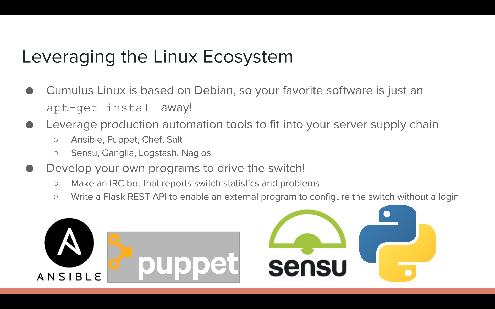</p>
<p>However, as I've mentioned, part of what you get when you choose Cumulus Linux
   is access to the entire ecosystem of DevOps tools, such as Ansible, Puppet,
   Chef, and Salt. Part of our goal is to bring the DevOps workflow to the
   network, and we did that by making the network speak the same language as
   everything else.</p>
<p>As a programmer, I also enjoy that because the switch is now just a Linux
   server, the possibilities for developing applications on top of the platform
   are endless. If you need a REST API for your switch, you can just install and
   run a Flask webserver and set up some Python endpoints that call the <code>ip</code>
   commands. Or you can create some common tasks and map POST requests to Ansible
   playbooks.</p>
<p>It's not enough to just do what the incumbents do. We need to do more, better,
   with less. Below is the video of the demo I showed during my last talk, where
   I use Ansible to configure BGP on a CLOS topology. Because I work on fresh
   virtual networks every time I do configuration, I can provision
   and extend my networks quickly and reliably.</a>

<p><iframe width="100%" height="400" src="https://www.youtube.com/embed/0ZIMCx6gozI" frameborder="0" allowfullscreen></iframe></p>

<p>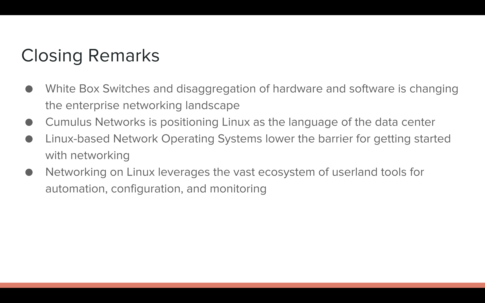</p>
<p>The key takeaway here is that white box switches have set the stage for Linux
   to take over switches the same way it took over servers. By making Linux the
   unified environment for the entire datacenter, we can leverage an ecosystem
   of skilled developers and administrators to advance whole datacenter solutions.
   For example, Cumulus Networks' recent release of
   <a href="https://cumulusnetworks.com/routing-on-the-host/">Routing on the Host</a>
   took a piece of software we were originally running on our switches and moved
   it back to the servers in a way that closed the gap between compute and network.</p>
<p>So if you have a Linux background and have always wanted to try to learn how
   to do networking, there's never been a better time than now.</p>


<p>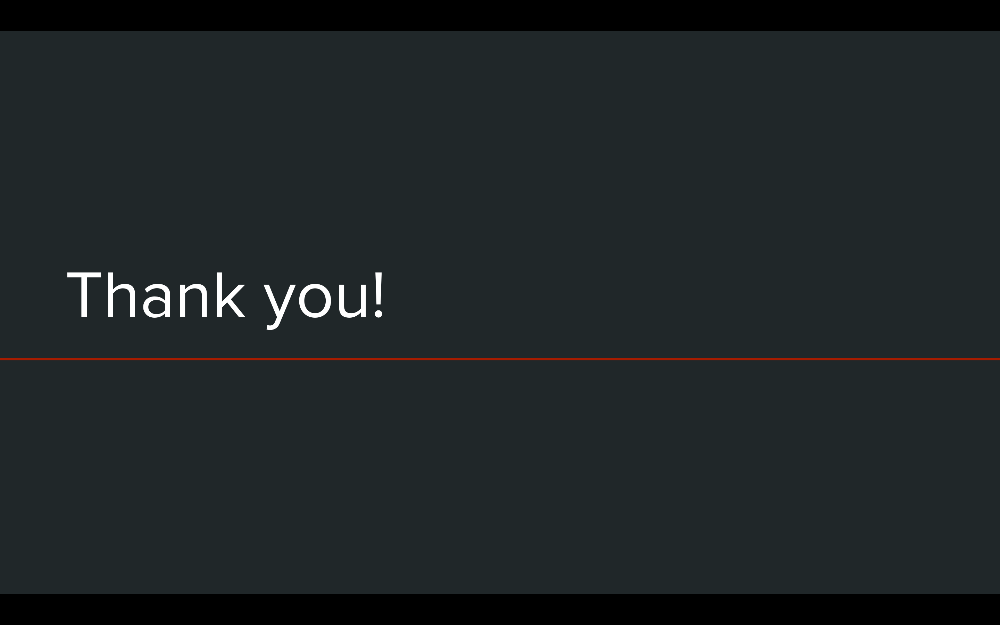</p>


  </div>
</div>
